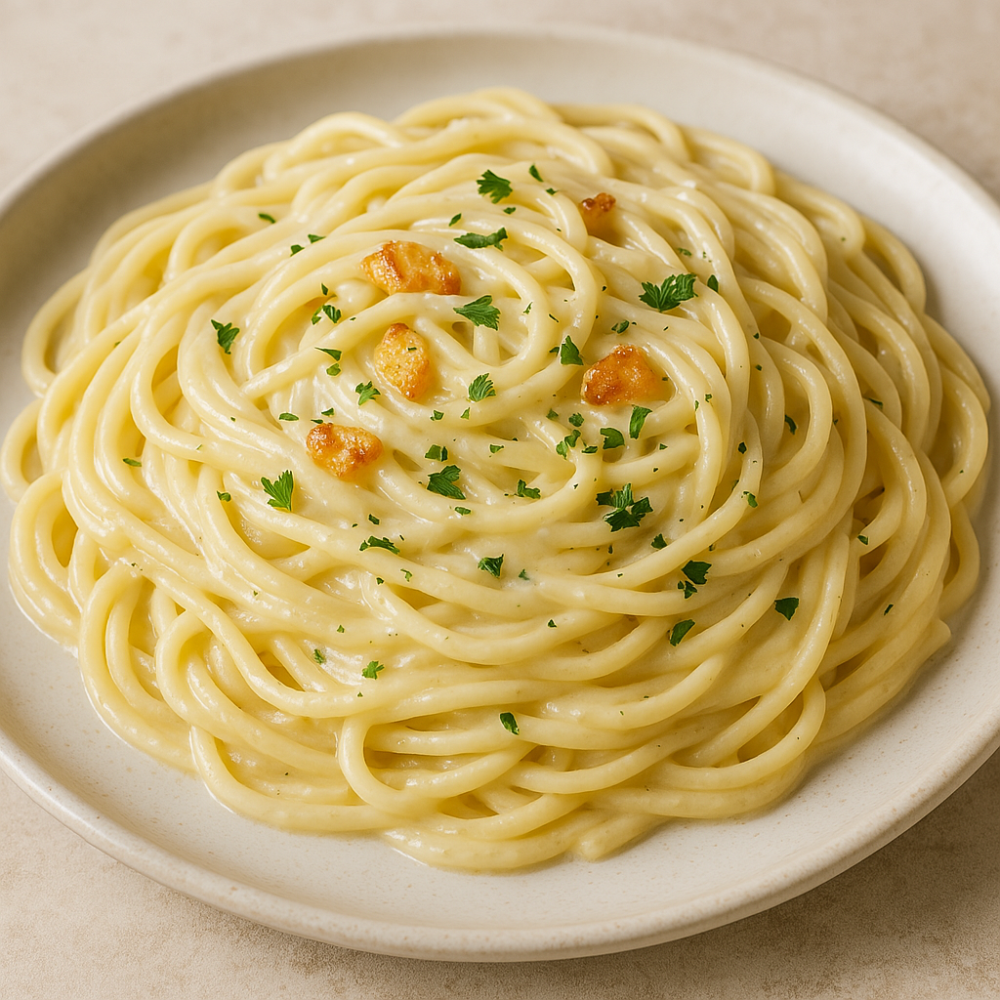

Creamy Garlic Spaghetti
Ingredients
- 200g Spaghetti
- 2 cloves of garlic (minced)
- 1/2 cup cream
- 2 tbsp olive oil
- Salt & Pepper to taste
- Fresh parsley (optional)
Instructions
- Boil the spaghetti in salted water until al dente.
- Sauté garlic in olive oil for 1-3 minutes
- Add cream and stir over low heat
- Drain spaghetti and mix into sauce
- Season with salt, pepper and parsley. Serve HOT